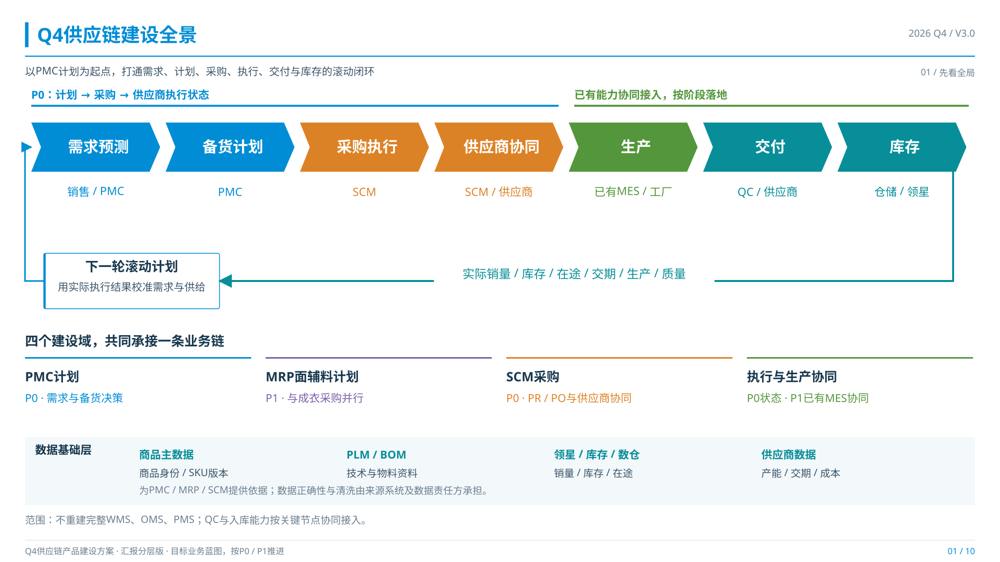
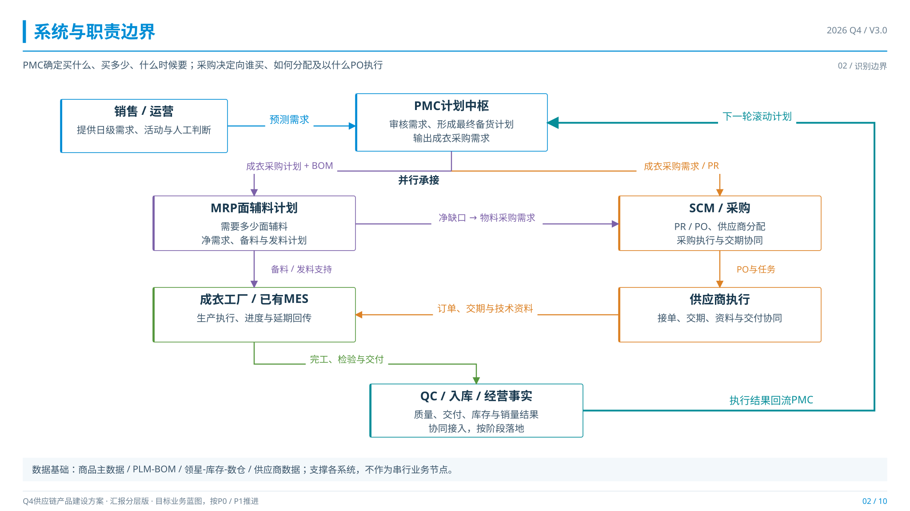
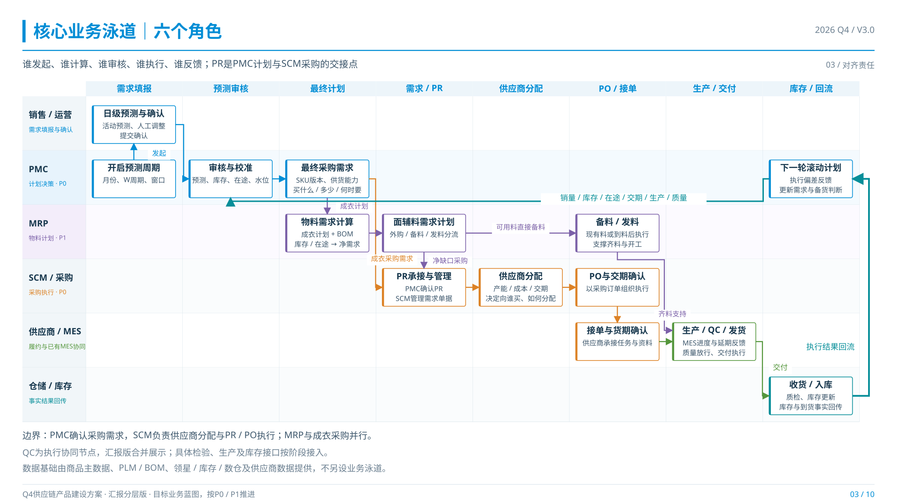
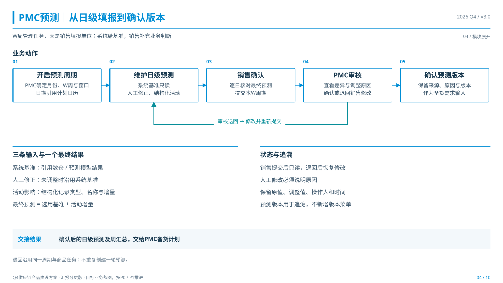
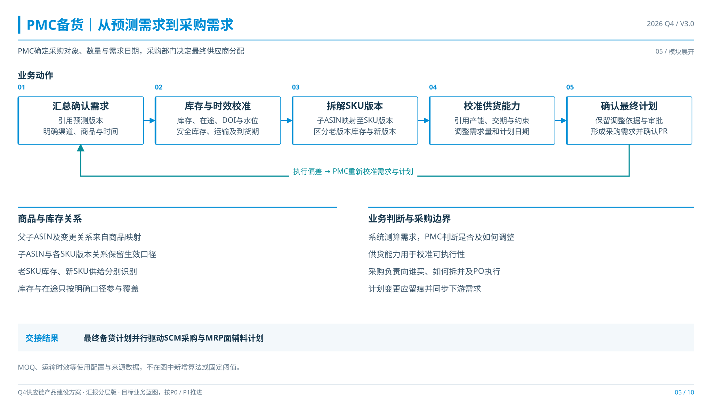
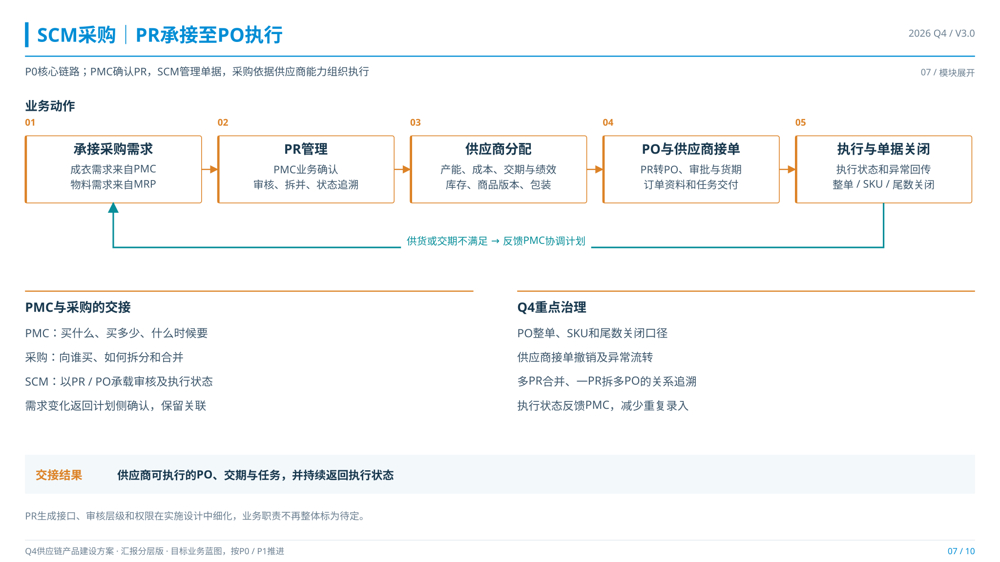
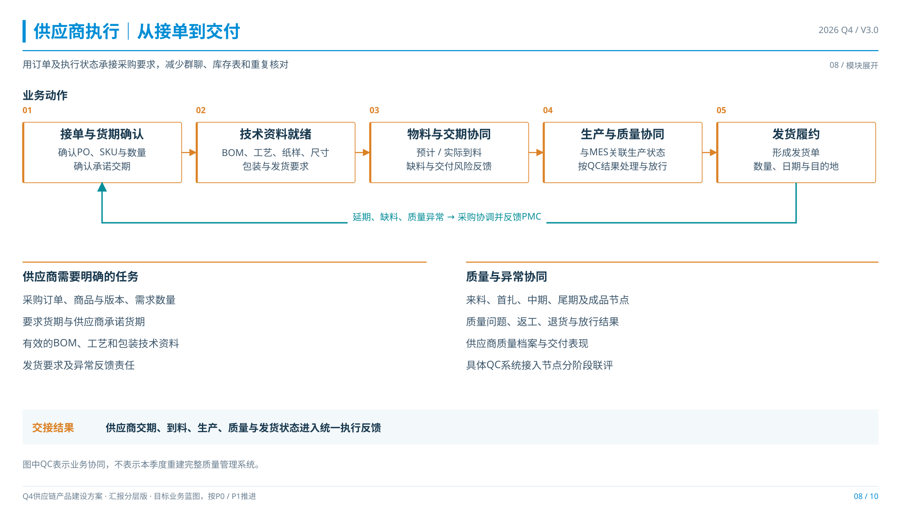
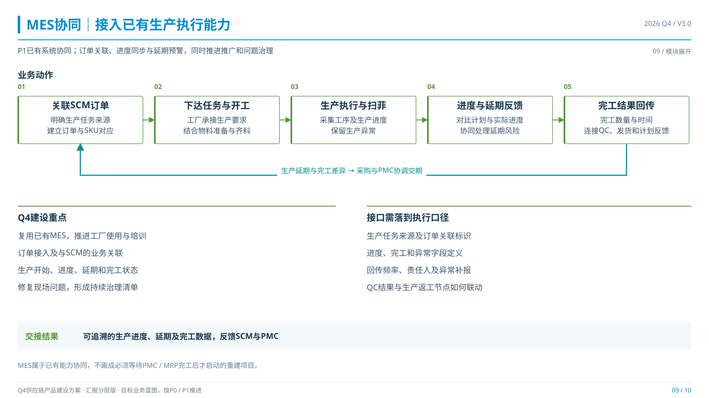
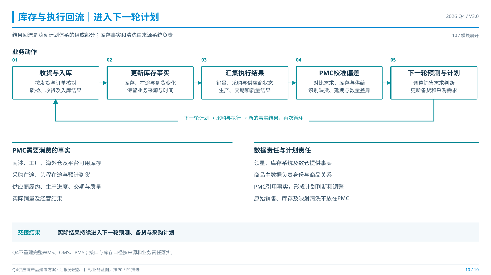

Q4供应链系统建设汇报 · V3.0
01 · Q4供应链建设全景PNG / SVG

02 · 系统与职责边界PNG / SVG

03 · 核心业务六角色泳道PNG / SVG

04 · PMC预测PNG / SVG

05 · PMC备货PNG / SVG

07 · SCM采购PNG / SVG

08 · 供应商执行PNG / SVG

09 · MES协同PNG / SVG

10 · 库存与执行回流PNG / SVG
